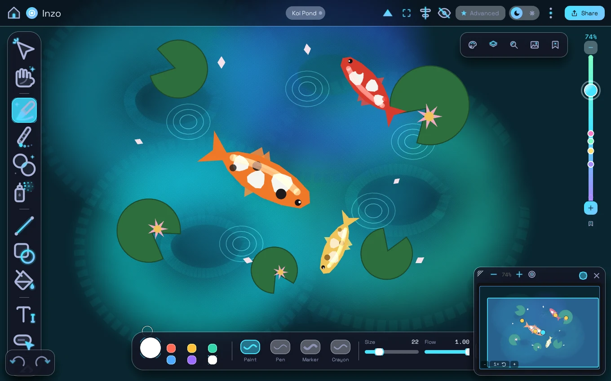
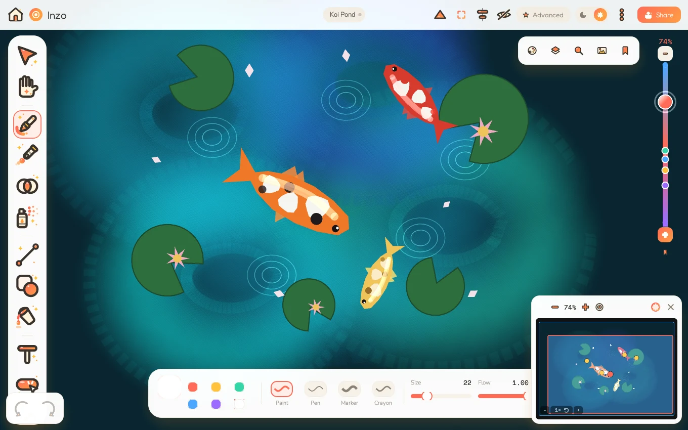
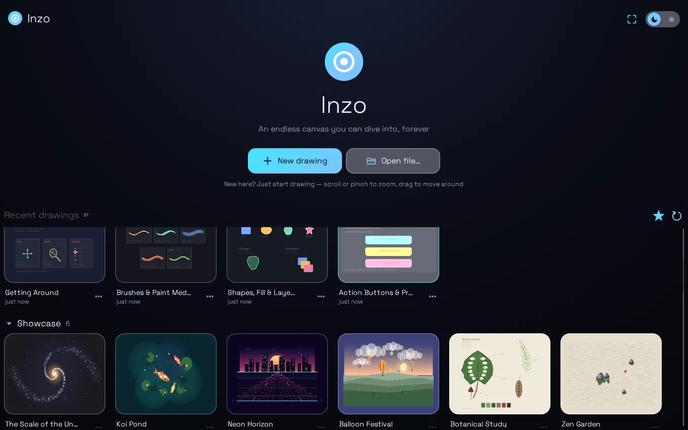

Paint a solar system. Zoom down to a single atom. Inzo has no zoom limit and no edges — just you, real brushes, and infinite room.
A very stripped-down Inzo, right in the page — it paints its own little demo until you take over. Draw, scroll to zoom, drop a bookmark, dive back. The real app goes much, much deeper.
this toy has 3 tools, 5 colours and one layer — the real Inzo adds 11 brushes, wet oil & watercolour, shapes, fill, text, layers, grids, export and more.
Straight screenshots of the app — the glass tool dock, the dive rail of bookmarks, the live minimap, and a library of 37 built-in example drawings to pull apart and learn from.



Everything you need to paint big and dive deep — nothing you don't.
World coordinates are arbitrary-precision numbers, not floats. Zoom from a whole solar system down to a single atom — the canvas never runs out of resolution, and never ends.
Eleven brush presets — pen to charcoal — plus oil, watercolor and acrylic media with genuine pigment mixing, bristle streaks and watercolour edges.
Real stylus pressure and palm rejection where your device supports it — and a speed-based feel that keeps finger and mouse strokes alive everywhere else.
Bookmark views on the dive rail, then let presenter mode fly the camera through them — or export the journey as an animated GIF or a self-contained flipbook.
Layers with opacity and tint dots, object grouping, editable colour palettes, square / dot / isometric guide grids, and a 500-step undo for every edit.
One tiny, fast Rust codebase runs native on Android today — with the same app coming to Mac and the web. Your drawings autosave to a compact portable file.
Inzo is out now on Google Play — tuned for tablets and styluses, happy on phones too. Mac and Web are on the way.